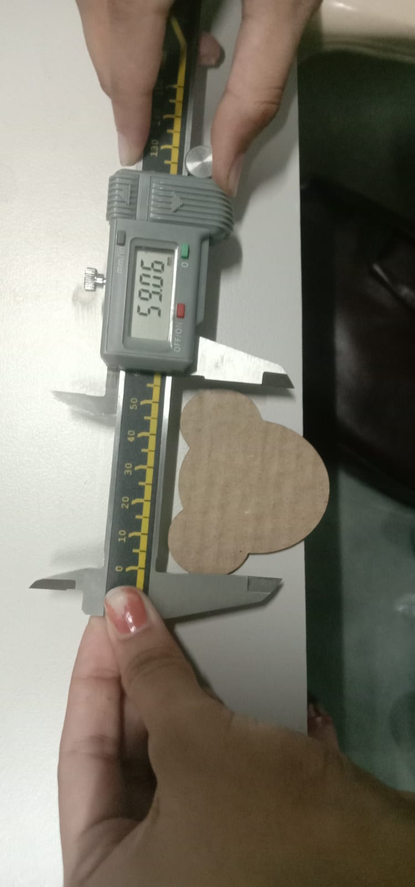

Tasks
- Make a group assignement
- Individual assignement
Laser Cutting: Where Precision Meets Possibility, Sculpting Intricate Designs with the Whisper of Light. Unveiling Imagination Layer by Layer.
Inkscape is a free and open source vector graphics editor. The software is designed with a lot of drawing and shaping tools, along with calligraphy tools. It’s really useful for creating illustrations like cartoons, logos, clip art.
I made feather using few basic tools.
Kerf is defined as the width of the material removed by cutting process. It is important to make press fit connections. Kerf depends on the material and the thickness.
For finding the kerf, we made a square of 20mm by 20mm using a 2.5mm acrylic sheet. After cutting the square on the laser cutter, the measurement is 19.70mm by 19.70mm.
Thus , the material lost while cutting is 0.3mm. This represents the diameter of the laser. For CAD designs, we need to offset the lines to be cut, this represents the radius of the laser.
Kerf = diameter of laser/2